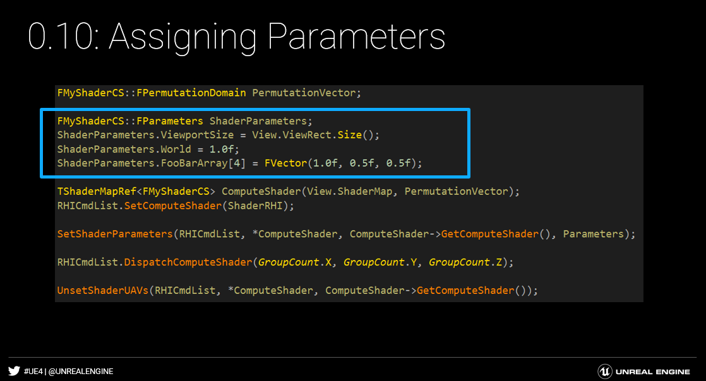
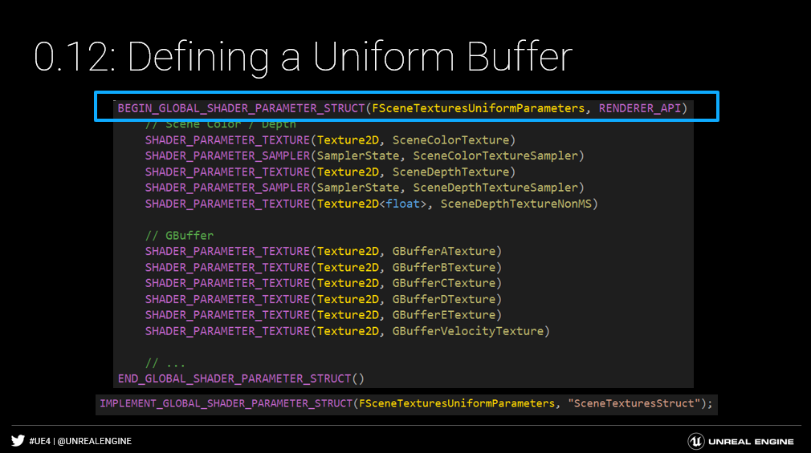
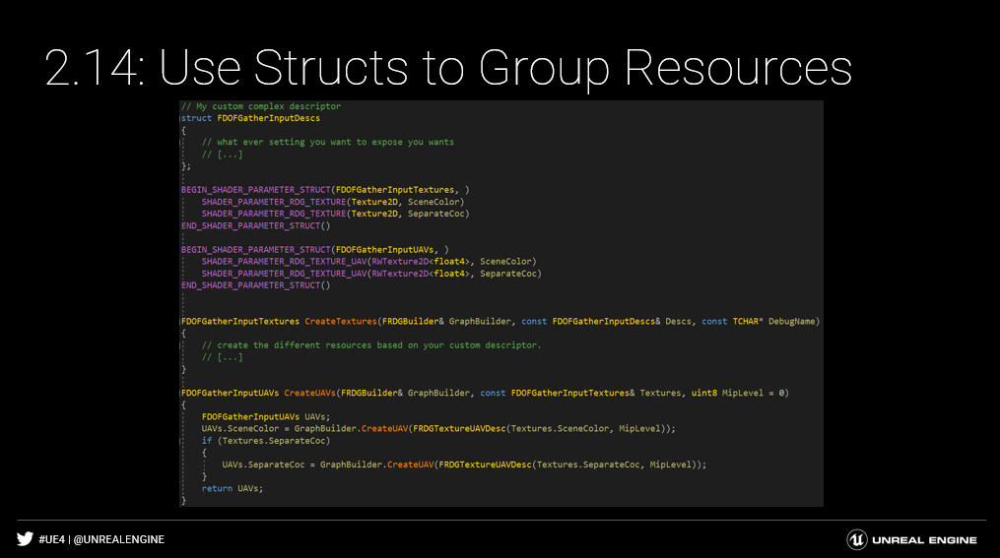
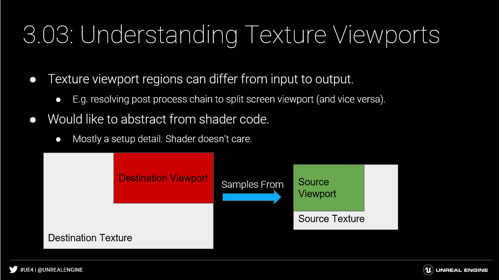

首先上UE 4.26 RenderGraph的流程图

以及RDG的相关定义及本ppt相关主题：
Shader Parameters
为了了解RDG结构，有必要了解shader parameter如何在UE引擎中展示
首先先看下在Shader中input，这些shader input 与一个用户可自定义的C++结构体相关联，并作为一个collection提交。不幸的是，虽然易于创作，但着色器编译器运行时无法验证这种表示
(下图右侧为理想C++情况)
Shader Parameter Structs
UE时使用一个宏系统定义shader属性结构，会在编译时自动生成反射。
Compile-Time Reflection Metadata
在C++中，用户可以遍历访问来自每个成员的信息：
Name, Type, Shader Type, Byte offset from start of struct
这对于从 RDG / RHI 中的 void* 结构指针中提取资源是必要的。
Engine\Source\Runtime\RenderCore\Private\ShaderParameterMetadata.cpp
shader 属性宏系统的特点是会自动生成 compile-time 的 reflection metadat。任何用户都可以在runtime时遍历shader 属性结构并获取每个单位的信息。要从公共代码（例如 RHI / RDG）中结构的 void* 指针表示中遍历和提取资源，元数据是必需的。
0.04 Automatic Parameter Alignment自动属性对齐
详细define 请见：Engine\Source\Runtime\RenderCore\Public\ShaderParameterMacros.h
1 | /** Begins & ends a shader parameter structure. |
另一个宏系统的特点就是能自动对齐shader 数据。虚幻引擎使用与平台无关的数据对齐规则来实现着色器的可移植性。
主要规则是每个成员都与其大小的下一个 2 次幂对齐——但前提是大于四个字节。例如：
- 指针是八字节对齐的（即使在 32 位平台上）；
- Float、uint32、int32为四字节对齐；
- FVector2D, FIntPoint 为八字节对齐；
- FVector 和 FVector4 是 16 个字节对齐的。
每个成员的自动对齐将不可避免地创建填充，如上面的评论所示。
0.05.Sort Members to Minimize Padding对成员进行排序以最小化填充
顺便说一句，请考虑组织结构以最小化或消除填充。参数的顺序不会以任何方式影响着色器源，因此这是一个低风险的更改，将导致上传到 GPU 的字节更少。
在上面的示例中，向上移动“float World”使其位于 FVector2D ViewportSize（三浮点结构）所需的四字节填充区域中。同样，这个三浮点向量将与十六个字节（或四个浮点数）对齐，因此将单浮点成员移动到第四个浮点槽将消除填充。
0.06:Example of Tightly Packed Structure
上面截取的代码演示了一个紧密存储的着色器参数结构。每个 FVector {x, y, z} 后跟一个浮点数以完成十六字节的内存槽。
0.07:No Need to Manually Pack Floats无需手动打包浮点数
shader作者需要手动将松散的浮点数打包成一个更大的 4 宽向量。
只要遵循填充规则，在使用 SHADER_PARAMETER_STRUCT 系统时这不是必需的。
通过避免通用参数向量（例如 MyFeatureParams.{x, y, z, w}），保持这些数据松散可以提高可读性。对于着色器源文件也是如此，它可以简单地声明带有友好名称的松散参数。
一个例外是参数数组。系统不会显式地将参数合并到单个数组中；你仍然必须自己做。
0.08.First Shader Class
现在我们的着色器有了一个着色器参数结构，我们需要定义着色器本身。在现有的着色器框架中使用新的着色器参数系统是easy的。
首先，将 SHADER_USE_PARAMETER_STRUCT() 宏添加到shader class。这实现了类的构造函数并配置着色器以使用声明的着色器参数结构。
光追着色器需要改用 SHADER_USE_ROOT_PARAMETER_STRUCT()，因为 RHI 处理它们的方式存在一些细微差别。此要求是暂时的(4.26)，将在着色器系统的未来修订版中删除。
配置后，着色器将在类中查找 FParameters 成员。这应该分配给您打算使用的着色器参数结构的类型。自然地，每个着色器只允许一个着色器参数结构。
这两个步骤是您开始使用着色器参数结构系统所需的全部步骤。该类将自动反映和绑定着色器参数。请注意，着色器编译器还将验证针对此结构的绑定。例如，C++ 中的类型现在将生成有用的错误消息，而不是静默失败。
0.09:Inlining the Struct Definition内联结构定义
/Engine/Source/Runtime/Renderer/Private/各类文件夹内
1 | class FVirtualVoxelGenerateMipCS : public FGlobalShader |
与参数结构具有一对一关系的着色器的最佳实践是直接在类上声明参数（作为 FParameters）。这是最简单、最清晰的方法。
0.10:Assigning Parameters声明属性

我们的着色器现在配置了一个着色器参数结构。我们现在需要为这些参数赋值并将它们推送到 RHI。首先，FParameters 类型只是一个结构体；您可以实例化并填充它。这使得调试变得微不足道，因为您现在可以在调试器中查看结构体的全部内容。
新设计的一个关键区别在于着色器参数设置与着色器类分离。这通过将参数设置移动到更高级别的pass代码中来提高清晰度，而不是将其与样板嵌入到着色器类中。这会产生更自然的数据流，更易于阅读和调试。
0.11：Submitting Parameters提交属性

/Engine/Source/RenderCore/Public/ShaderParameterStruct.h
1 | /** Set shader's parameters from its parameters struct. */ |
着色器参数系统提供了一个辅助函数 SetShaderParameters，将参数推送到 RHI 命令列表。这提供了在调试器中检查着色器参数值的清晰位置。
此函数将根据正在使用的特定着色器排列验证结构的内容。如果所需资源为空，则会发出错误。作为旁注，结构的所有成员都默认初始化为 null、零或默认构造函数（取决于类型）。
这也意味着如果排列不使用资源，则可以安全地忽略它。
0.12：Defining a Uniform Buffer

统一缓冲区使用相同的着色器参数结构模型，但有自己的专用宏来将参数声明为“全局”。
0.13:Uniform Buffer Code Generation
Common.ush 已经include生成的shader代码
然后就可以作为一个全局结构（存储在unifrom buffer）去访问
从长远来看，着色器参数和统一缓冲区之间的 HLSL 不应有语法差异。
全局着色器参数结构具有自动反映在着色器代码中的附加功能（和开销），以及一些 HLSL 语法特殊性的处理。
0.14 Include Uniform Buffers in Shader Parameter Structs
shader属性结构可通过SHADER_PARAMETER_STRUCT_REF()变体依赖于uniform buffers。
由于此着色器绑定名称由 IMPLEMENT_GLOBAL_SHADER_PARAMETER_STRUCT() 定义，因此引用的统一缓冲区的成员名称仅由 C++ 使用。
最后，因为只有一个全局定义的绑定名称，所以一次只能绑定一个统一缓冲区的实例。
Render Graph Basics
1.00 The Render Graph Builder
render graph API从构建器开始，这个构建器接口通过资源和passes的立即模式声明来促进graph的设置。该graph是通过设置阶段逐步构建。一旦所有setup完成后，graph将执行，它会以依赖项排序的顺序编译并调用所有的pass。除其他外，这种设计可实现 GPU 工作的高效调度和更积极的内存管理。
API 易于使用。您只需定义一个graph builder 实例，执行设置操作并执行。构建器是单线程的（总是在渲染线程上！）并且在执行之间不保留任何状态。整个图被重建每一帧。
为了真正实现全帧优化，最终目标是将整个引擎移植到使用相同的图形构建器实例。这将需要一段时间。 “移植”现有代码或编写新渲染代码的首选模式是定义您自己的本地图形构建器实例并手动执行它。随着引擎的各个部分被移植，它们都将合并到同一个构建器实例中。
1.01 Creating a Texture
创建新Texture，你只需要在graph builder中调用 CreateTexture 。它会在graph builder 实例的生命周期中返回一个可用的RDG texture 句柄。单独的类型是必要的，因为物理 GPU 资源不会立即分配。RDG 指针表示未来资源的句柄，保证对每次使用它的pass都是有效的。
资源如何与pass相关联的详细信息将在稍后介绍。我们在上面的代码中所做的就是在图形上声明纹理。
1.02 Creating a UAV for a Texture
同样，您可以使用构建器来创建资源（纹理或缓冲区）的视图。上面的代码示例在指定的 mip 级别创建了纹理的 UAV。
1.03 Creating an SRV for a Texture
SRV 也受支持并遵循相同的一般创建模式
1.04 Pass Parameters
为了连接RDG资源和pass，我们使用一个修改过的SHADER_PARAMETER_STRUCT 来声明 RDG shader parameters。这个shader 属性的变体接受C++ RDG resource 指针。graph会转换在pass中的struct 并注册 RDG 资源给相关的pass使用。这就是内存管理优势发挥作用的地方，因为graph能够仅根据Pass如何使用资源来推断资源的生命周期。
请看上面代码，有人可能会问为什么我们使用一个shader parameter struct代表pass parameter而不是其他pass parameter struct。这是一个有意识的设计决定，以简化使用着色器（这是引擎中最常见的pass类型）的 1 对 1 pass的创作。上面的着色器参数结构有两个目的：
- Pass 设置：由于几乎所有的资源都是由shader产生、消耗的。我们可以从shader 的metadata中获取到资源将如何在pass中被使用（Read、Write）。这个信息对于资源转化很重要。
- 设置属性值给Command List：pass内的shader不需要‘提取’pass资源；它可以简单地绑定整个结构。 RHI 着色器参数绑定代码会自动取消引用 RDG 资源。
通过将Pass/资源关联组合到着色器参数结构中，编写单着色器Pass变得微不足道。大量减少样板文件，提高了整个代码库的可维护性。
总结一下：着色器参数结构提供了使用 RDG 资源的扩展。这个着色器参数结构提供了一个 RDG Pass，它遍历并提取设置Pass资源所需的所有信息。
1.05 Adding a Pass
为了向图形添加pass，构建器提供了 AddPass 函数。此函数接受在图形执行期间调用的 lambda。 lambda 提供了一个 RHI 命令列表来将工作分派给 RHI。pass接受一个着色器参数结构，并将反映它的所有 RDG 参数。所有其他着色器参数都将被忽略。
1.06 Profile Events
每个RDG pass接受一个格式化的名称，该名称暴露给ProfileGPU命令和外部GPU profiler。我们鼓励您填写足够的信息以唯一标识通行证。请注意，出于性能原因，此信息已从发布版本中删除。
1.07 Pass Parameter Setup
如前所述，graph需要知道pass将访问哪个 RDG 资源，它从pass参数结构中收集。但是，由于graph执行被推迟，因此需要分配此结构以匹配graph的生命周期。graph构建器界面提供了一个 AllocParameters 函数，该函数针对graph的生命周期进行了优化。我们更喜欢为此对象使用 PassParameters 命名约定。
关于pass参数结构和passes的一些规则：
- pass参数实例一旦通过 AddPass 关联到pass，就被认为是不可变的。pass承担指针的所有权（包括销毁）。只有一次pass,我使用pass参数实例（它们必须是 1 对 1）。要支持多次pass，您必须为每个pass实例化一个唯一的实例。
- 分配pass参数实例然后不将其关联到pass是无效的。
- 您只能访问pass lambda 中 RDG 类型的底层 RHI 资源，并且仅当 RDG 类型在与pass关联的pass参数实例上声明时。
如果违反这些条件，RDG 验证层将发出错误。
1.08 Pass Execution Lambda Function
1.09 Render Target Bindings Slots
在创作使用光栅管道的pass时，将 RENDER_TARGET_BINDING_SLOTS() 宏添加到pass参数结构中。这将公开渲染目标和深度模板的输入，这些输入将由Pass拾取。着色器会忽略此数据。
1.10 Binding a Color Render Target
渲染目标作为绑定数组公开。每个绑定都接受一个 RDG 纹理以及加载/存储操作。
1.11 Binding Depth Stencil Target
同样，深度模板作为单独的绑定公开。它还接受 RDG 纹理以及分别加载/存储深度和模板的动作。此外，您可以指定纹理是读取还是读写。
1.12 Binding UAVs for Pixel Shaders

也可以为像素着色器绑定UAV。
1.13 Registration
如果需要注册与 RHI 资源不同的资源（例如非常旧的 FRenderTarget），请检查 GRenderTargetPool.CreateUntrackedElement() 以获取 TRefCountPtr
渲染 graph 目前使用 IPooledRenderTarget 接口来控制纹理的分配。有时需要将现有资源导入图中（尤其是在 RDG 转换过程中）。构建器公开 RegisterExternalTexture，它返回由现有渲染目标支持的 RDG 纹理实例。
1.14 Extraction Queries
池化渲染目标指针也可以从 FRDGTexture 中提取。这允许您跨图形调用保留资源的内容。
但是，提取会推迟到图执行完毕；这是因为在执行期间可能会根据graph中资源的生命周期分配资源。
因此，API 公开了 QueueTextureExtraction，它允许您提供一个指针，该指针将在执行graph时填充。
1.15 Creating Buffers

API 自然地公开了为它们创建缓冲区和视图的方法。
1.16 Reading from a Buffer Using an SRV
缓冲区只能使用 SHADER_PARAMETER_RDG_BUFFER_SRV() 通过 SRV 从着色器读取。
1.17 Indirect Draw/Dispatch Buffer
间接绘制/分派缓冲区有点独特，因为它们不被着色器直接使用。相反，在pass参数上将它们声明为 RDG 缓冲区，然后直接在pass中使用 RHI 间接绘制缓冲区。
Pass Debugging and Methodology
2.00 VisualizeTexture Integration
List 所有可用texture
vis
查看名为“DOFGatherForeground”的texture
vis DOFGatherForeground
RDG 自动将 FRDGTexture 暴露给可视化纹理工具。任何写操作都会被记录下来。只需在控制台中直接输入您为 CreateTexture() 提供的调试名称，它就会出现。
如果您有多个Pass修改或重新定义具有相同调试名称的新纹理，则捕获Pass将捕获所有这些Pass，但仅显示最后一个捕获实例。
2.01 Selecting a Resource Version
具体看第二次迭代“DOFGatherForeground”
vis DOFGatherForeground@1
可以使用 @N 语法选择要可视化的资源版本
2.02 The Downside of Deferred Execution
在DOF‘s IndirectScatter pass中的断点例子
DOF 的 IndirectScatter pass 的 lambda 中的调用堆栈
RDG实现的Callstack
后处理链中的调用堆栈，而不是 DOF。 :(
pass的设置可能包含您的错误的原因，但在执行pass时它早已消失…..
延迟执行的一个主要缺点是它使调试变得困难。如果在pass执行期间出现问题，则问题的根源可能在设置阶段。但是，由于设置堆栈帧早已消失，您将丢失所有中间设置信息。虽然可以在设置代码中设置断点，但问题可能是虚假发生的，或者pass可能是常见的执行路径（例如采样操作）。
2.03 -rdgimmediate
添加后立即执行pass
产生与延迟执行相同的功能行为；
如果执行中断，则易于检查设置代码；
在 AddPass() 之后不能修改 PassParameter 的原因
可在运行时使用 r.RDG.ImmediateMode 切换
占用大量内存；考虑以较低的分辨率运行：r.Test.SecondaryUpscaleOverride
为了解决这个问题，RDG 能够在立即模式下运行。这将在 AddPass 期间立即执行pass。这种模式使用大量内存，因为在整个设置过程中必须在所有分配上保持引用（我们不知道是否会使用资源！）。但是，调试的好处是巨大的：您可以在执行期间设置断点，并可以清楚地看到出错的调用堆栈。可以在启动时或运行时启用此模式。
2.04 -rdgimmediate in action
在这个例子中，我们在景深 IndirectScatter pass中遇到了一个断点。启用立即模式后，我们可以浏览在设置阶段准备的 ConvolutionTextures 数据结构的内容，以调查问题。
2.05 Early Validation of Shader Parameters着色器参数的早期验证
一个常见的错误是将所需的着色器参数留空。如前所述，SetShaderParameters 函数将验证是否存在所有必需的着色器参数。但是，最好在设置时发现这些问题。因此，提供 ValidateShaderParameters 以允许您确保在添加到Pass之前所有内容都存在。
2.06 -rdgdebug
额外的验证警告，因为 CPU 成本太高而无法一直检查
捕捉诸如（但不限于）之类的东西：
pass不需要的资源
通过pass产生但不需要的资源
可在运行时使用 r.RDG.Debug=1 进行切换。
RDG 提供了丰富的验证层，可以捕获图形设置问题以及性能问题。更昂贵的验证隐藏在 CVar 后面，它可以通过命令行或在运行时启用。验证的常见情况之一是捕获已声明但未实际使用的资源。
2.07 Dependency Methodology:White-Listing依赖方法：白名单
AddPass 会访问所有在pass 属性 struct中的所有RDG资源，甚至是那些没有实际被graph execution function使用的属性。这包括分配内存和执行屏障/布局转换等操作，这些操作可能代价高昂。为了消除不必要的成本，重要的是只提供通行证实际使用的资源。由于着色器参数默认初始化为空，因此最简单的解决方案是通过根据使用条件（上例）进行分支分配来将所需资源列入白名单。
2.08 Dependency Methodology : Black-Listing依赖方法：黑名单
同样，您也可以使用相同的逻辑来清除满足特定条件时未使用的资源。
2.09 Automatic Black-Listing For a Single-Shader Pass
在修改你的pass属性前自动执行 ValidateShaderParameters()
大多数情况下，pass 只是包装单个计算或像素着色器操作。由于着色器包含许多排列，这会造成潜在的维护噩梦，必须手动调整pass参数以将未使用的资源列入黑名单。
相反，RDG 提供了一个实用函数，可以为您执行此操作：ClearUnusedGraphResources。该函数采用单个着色器并将着色器未使用的所有资源清零。这将完全从pass中删除这些资源，从而消除了通过图形跟踪它们的成本。
在清除任何资源之前，实用程序函数会自动为您调用 ValidateShaderParameters。这是通过确保在清除未使用的资源之前存在所有必需的资源来避免混淆。
2.10 Repetitive AddPass Pattern重复的 AddPass 模式
2.11 Use Helpers as Often as Possible 尽可能使用Helpers
对于常见情况，如计算着色器，实用函数可以删除大量样板文件。更少的样板意味着更少的复制粘贴错误和更容易的维护。
2.12 GPU Debugging UAV Trick GPU调试UAV的技巧
顺便说一句，这里有一个巧妙的技巧：有时在调试着色器时，您只需要在纹理中进行良好的老式 printf 调试。这可以在 C++ 中设置一次，并在着色器代码中有条件地启用！
基本思想是创建一个可选的 RDG 纹理和关联的 UAV，然后将其绑定到您在整个功能开发过程中需要调试的每个Pass。然后，在着色器代码中，您可以有条件地声明纹理资源的存在并写入您想要的任何内容。当资源不活跃时，系统会自动剔除该资源。您可以使用可视化纹理工具查看自定义纹理的内容！
2.13 Need More than 4 Channels in a Texture?在一个纹理中需要 4 个以上的通道？
可能需要编码比像素格式可能提供的更多的信息。 （明显的例子：GBuffer）
需要读取和写入更多纹理。
需要设置所有这些纹理，就好像它们只是一个一样。
想抽象这些细节。
作为另一个方法示例，考虑从多个纹理通道工作的Pass——超过任何单个纹理支持的最多四个通道。最好抽象一些此设置，以便实现将它们视为单个集合。
2.14 Use Structs to Group Resources

为了实现这一点，我们可以将这些资源分组到着色器参数结构中并创建方法来初始化它们。这些函数的实现可以抽象出是否包含额外的纹理引用的细节。
2.15 Resource Structure Setup 资源结构设置
纹理结构的行为类似于本机 RDG 资源。设置代码中的复杂性被抽象为单独的函数，从而产生更加模块化的代码。
2.16 Flexible Structure Nesting 灵活的结构嵌套
着色器参数结构可以嵌套。在 C++ 中，这只是结构的组合。在着色器代码中，您必须使用结构名称作为结构成员的前缀，并用下划线分隔。在这个例子中，我们可以简单地引用结构，而不是手动列出所有输入纹理。
2.17 Nesting Common Parameters 嵌套通用参数
没有关于资源结构的任何特定内容。任何着色器参数都可以嵌套。推荐的模式是识别多个Pass之间共享的常见着色器参数。这些参数可以提取到它们自己的结构体中，填充一次，然后再四处复制。使用单一代码路径来设置通用参数可降低维护成本。
2.18 Include Shader Parameter Struct
也可以在 C++ 端嵌套一个子结构，但将所有着色器名称吸收到父作用域中。在上面的示例中，构建了零碎的参数结构，然后将其组合到着色器的参数结构中。为了避免在着色器端创建多余的命名前缀，使用了 SHADER_PARAMETER_STRUCT_INCLUDE 变体。这会导致着色器名称扁平化到全局范围内，删除结构前缀。这在组织 C++ 中的更新频率时非常有用。例如，您可能有一系列引用相同的公共着色器参数的过程。通过包含通用参数，您可以在设置开始时构建它们，然后简单地复制它们。
2.19 Setup Nested Structures as You Please 根据需要设置嵌套结构
嵌套系统足够灵活，可以支持大多数需求。根据您的功能需求（例如代码重复、冗长等），使用您的判断来组织参数。虚幻引擎提供了实现这一目标所需的工具。
2.20 Structure Arrays 结构数组
我们之前介绍了使用 FDOFGatherInputTextures 将资源组织到结构中的便利性。事实证明，景深着色器之一需要为此资源结构的每个纹理生成一个 mip 链。系统支持 C++ 端的着色器参数结构数组，以帮助处理此用例。 C++ 使用直观的 for 循环设置每层的所有 UAV 变得更加方便。着色器代码不是最好的，原因与结构嵌套相同，但至少 C++ 端不受此限制。
2.21 Event Scopes
为了在 GPU 调试工具中更好地组织时序，可以在代码中添加事件范围以包含在其中创建的所有pass。
当与信息性能相关的信息结合时，事件会更有用。例如，景深可能必须支持 Alpha 通道。这会更改缓冲区布局并增加纹理提取。但是，将这些信息放在每次通过时可能会产生很多噪音。这是可以存储在整个范围内的信息。
2.22 GPU Timing Aggregation
除了绘制事件之外，UE4 还跟踪存储桶中的 GPU 计时统计信息。这些通过 stat gpu 控制台命令显示。
GPU 统计支持仅以范围形式与 RDG 集成。每个Pass的 GPU 计时将在Pass设置时与最内部的范围聚合。
Screen Pass Framework
3.00 What is a Screen Pass？
只是一个读取纹理输入和写入纹理输出的Pass
大多数通过引擎；
帮助构建问题空间。
主要针对像素着色器；
该框架的组件也适用于计算。
选择了 Screen Pass 命名约定而不是后期处理；
更通用
SSS 是灯光合成的一部分——并不是真正的后期处理；
首先，什么是screen pass？本质上，它只是一个读取纹理输入和写入纹理输出的Pass。该定义适用于引擎中的大多数pass，并有助于确定问题空间。虽然该框架主要针对像素着色器Pass，但某些组件也适用于compute pass。关于命名的注意事项：我们选择了“screen pass”约定而不是“post process”。我们觉得这更通用。例如，次表面散射在技术上不是后期处理，因为它在照明合成阶段运行。
3.01 简化Pass创作
Screen Pass要求；
描述输入/输出的着色器参数
纹理范围、视口等。
大多数只需要一个像素/计算着色器
隐藏区域网格？全屏三角？
处理任意视口区域
分屏/VR
动态分辨率缩放
Screen pass框架为这些问题提供了解决方案
有了前面的定义，让我们考虑一下screen pass的基本要求。
首先，着色器可能需要有关其纹理的信息；例如，以像素为单位的范围或 UV 坐标中的视口区域。
接下来，在大多数情况下，screen passes只需要一个像素或计算着色器。像素着色器的一个重要考虑因素是是否使用用于 VR 的 HMD 隐藏区域网格进行渲染，或者只是使用全屏三角形进行渲染。
最后，我们稍后会更深入地看到，我们需要灵活地渲染到输出纹理的视口或从输入纹理的视口渲染样本。这方面的用例包括分屏或 VR 和动态分辨率缩放。最终，screen pass框架的存在是为了解决这些问题。
3.02 Texture Viewports
对视口/范围对进行分组的简单类
- 用于派生着色器参数；
- 用于为Screen Pass指定输入/输出视口；
- 用于派生视口之间的 UV 变换。
screen pass 框架明确定义了一个纹理视口。这个数据结构描述了一个在纹理范围内定向的矩形——两者都以像素为单位。我们需要两者才能在 UV 坐标中表达视口并在视口之间映射。正如我们将在后续幻灯片中看到的，框架使用它来导出着色器参数、定义屏幕pass的输入和输出视口，以及在视口之间导出 UV 变换。
3.03 Understanding Texture Viewports

纹理视口区域可以从输入到输出不同。
- 例如。解析后处理链以拆分屏幕视口（反之亦然）。
想从着色器代码中抽象出来。
- 主要是设置细节。着色器不在乎
要了解对纹理视口的需求，请考虑具有单个输入和输出纹理的Pass。一个重要的认识是这两个视口可以不同。分屏就是一个明显的例子。我们可能需要从分屏视口中读取，处理一些中间pass链，然后将结果合成回分屏视口。理想情况下，这些细节尽可能从着色器代码中抽象出来。
3.04 Multiple Input Viewports

纹理试图窗口可以区分不同的输入：
- 比如：TAA 上采样之后的任何内容也需要深度/速度。
我们需要一种简单的方法来在视口之间映射 UV 坐标
在更高级的场景中，纹理视口甚至可能因输入而异。例如，在运动模糊中，深度和速度共享一个视口；然而，场景颜色已经从 TAA 上采样，所以它有第二个视口；最后，速度tile分类纹理有第三个。简而言之，我们需要一种简单的方法来映射这些视口空间之间的 UV 坐标。
3.05 Texture Viewport Parameters
描述着色器的纹理视口
- 范围、视口、UV 视口等
不与纹理一对一绑定- 可以共享（例如深度/速度）；
- 根据需要定义尽可能多或少的数量
为了解决着色器参数问题，框架定义了一个从纹理视口派生的新着色器参数结构。它提供纹理的范围和反范围等信息；像素或 UV 坐标中的视口矩形等。根据设计，它不与特定的纹理实例耦合，因为pass的多个输入往往共享相同的纹理视口。相反，您可以根据需要为您的pass定义任意数量。
3.06 Texture Viewport Parameter Setup
pass属性结构的成员
要使用纹理视口参数，只需将其添加为我们在前面幻灯片中看到的pass参数结构的成员。您可以直接从纹理视口实例化参数。
3.07 Defining in the shader
在HLSL中使用 SCREEN_PASS_TEXTURE_VIEWPORT 宏
在 ScreenPass.ush 中定义
在着色器方面，框架提供了一个宏来定义 HLSL 中的纹理视口参数。这消除了添加每个单独成员的需要。它在 ScreenPass.ush 中定义。
3.08 Draw Screen Pass API
用于像素着色器的过程
- 抽象 HMD 网格与全屏三角形
- 抽象的shader设置
指定输入/输出纹理视口- 自动 RHI 视口设置
- 自动 UV 坐标生成
存在其他低级变体：- 比如：手动提交到命令列表
为了更轻松地使用像素着色器，该框架包含实用函数以将像素着色器pass直接添加到渲染图。它抽象了细节，比如是使用 HMD 网格还是全屏三角形。您提供输入和输出纹理视口，实现会自动处理 RHI 视口设置和 UV 坐标生成。如果您需要更多控制，则存在此功能的其他低级变体；例如，如果您需要手动设置您的pass并提交到命令列表。
3.09 Transform UV’s Betweeen Viewports
将 UV 从一个视口映射到另一个视口的简单比例/偏置因子；
- Seen it used enough times to warrant making it a first class citizen.
- 无需继续派生（或复制粘贴）转换代码。
- 可以使用SCREEN_PASS_TEXTURE_VIEWPORT_TRANSFORM宏
最后，该框架提供了一种简单的变换类型来将 UV 坐标从一个视口空间映射到另一个视口空间。要实例化，只需传递您的源视口和目标视口。在着色器代码中，将比例/偏置因子应用于源 UV 坐标。在着色器中，您可以使用 SCREEN_PASS_TEXTURE_VIEWPORT_TRANSFORM 宏来快速定义变换。